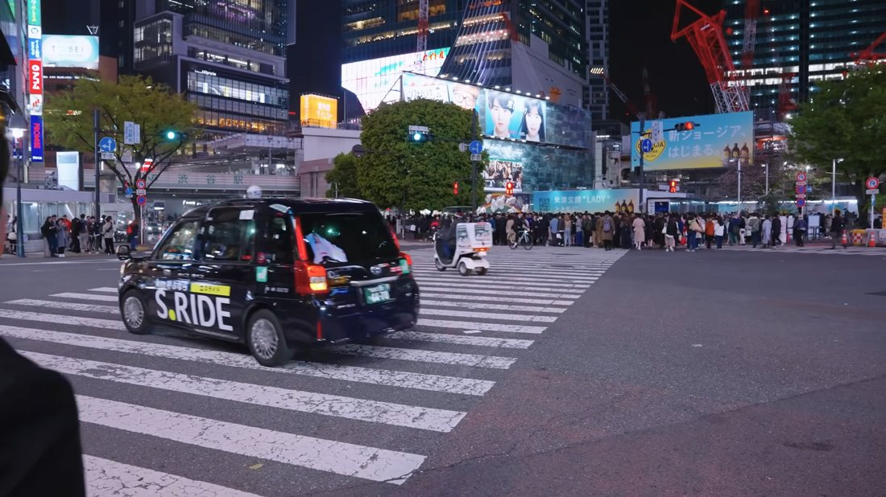
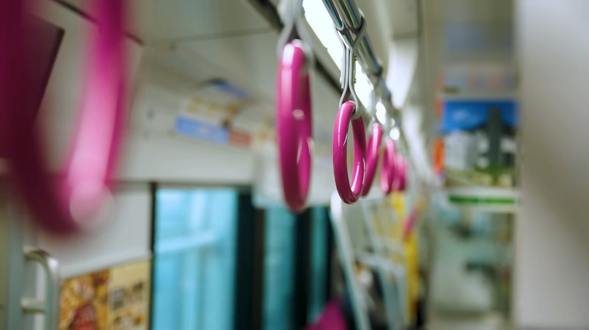
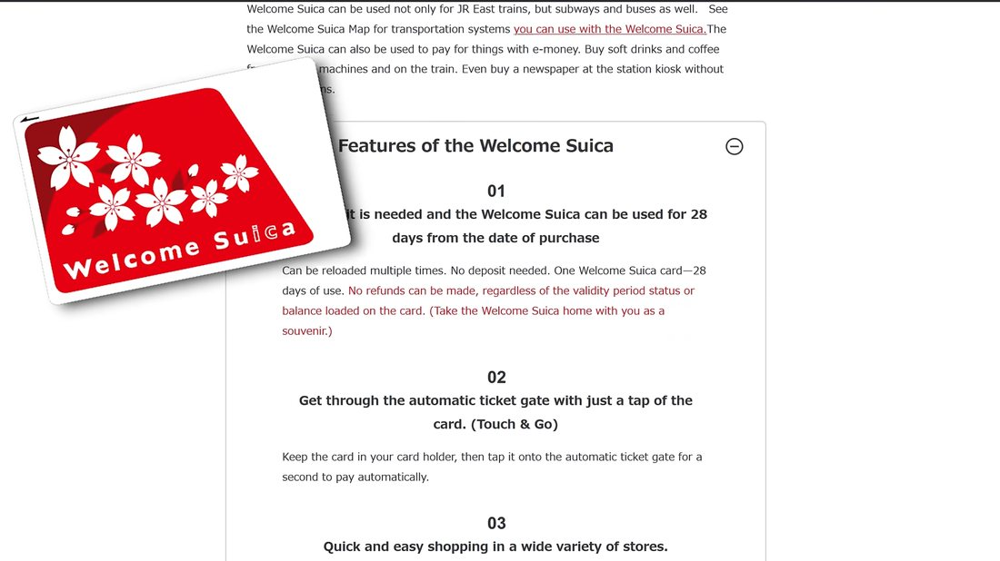
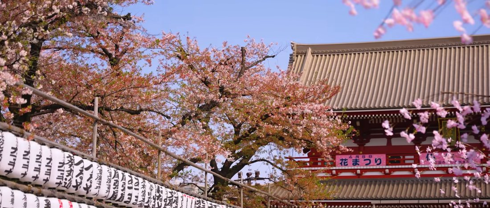
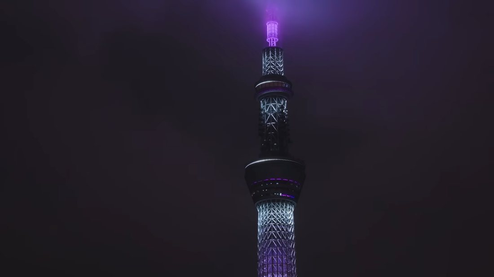
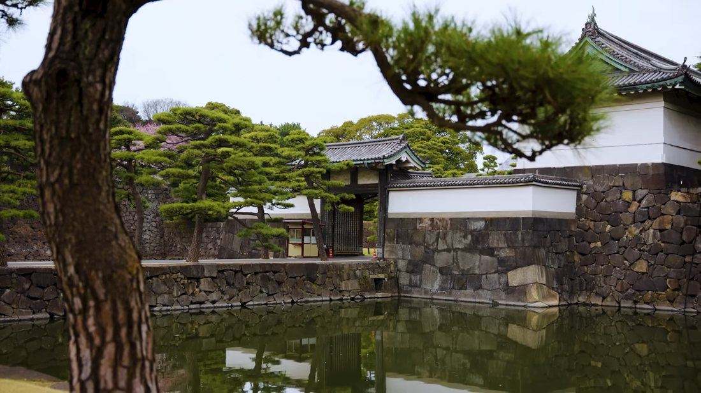
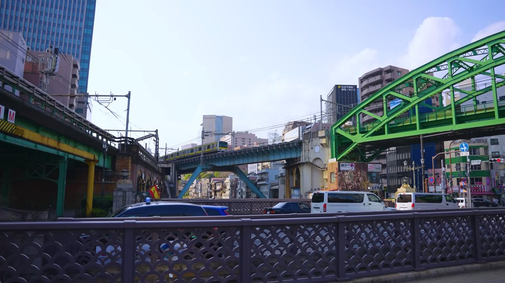
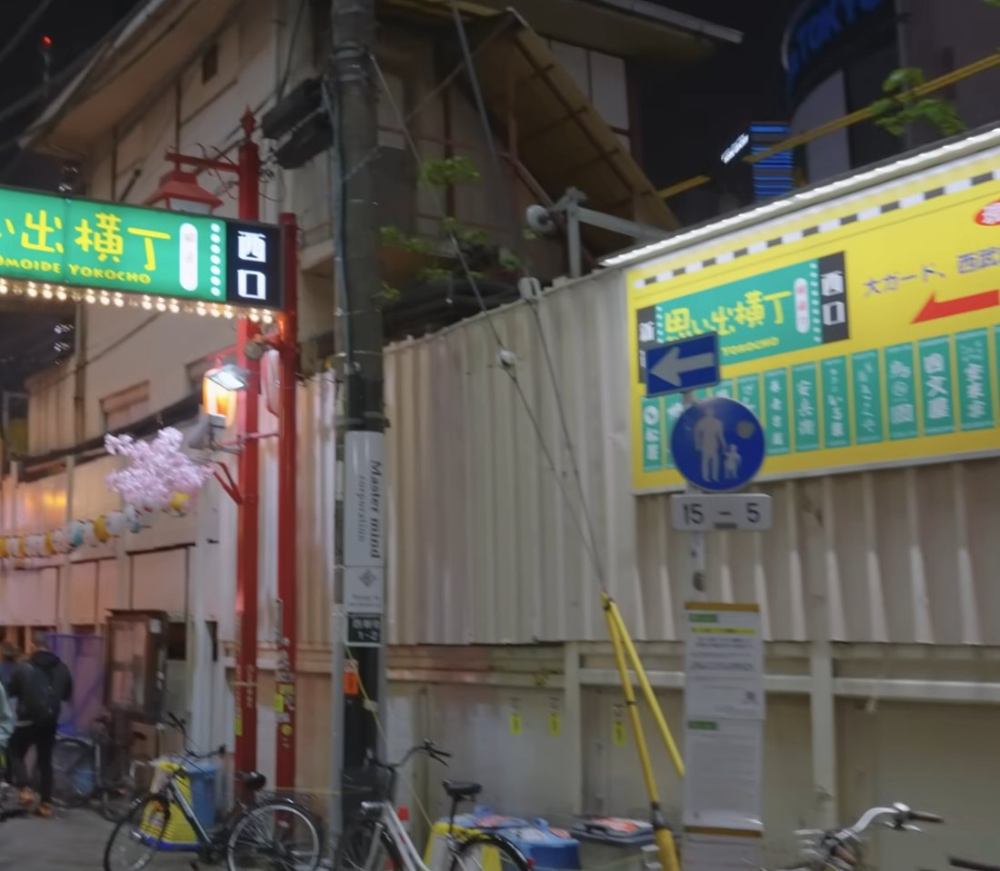
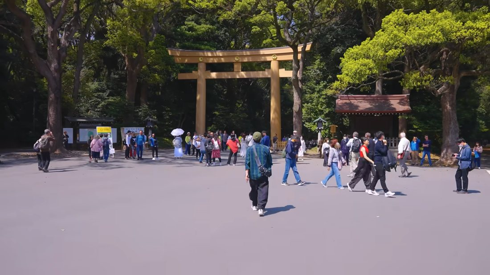
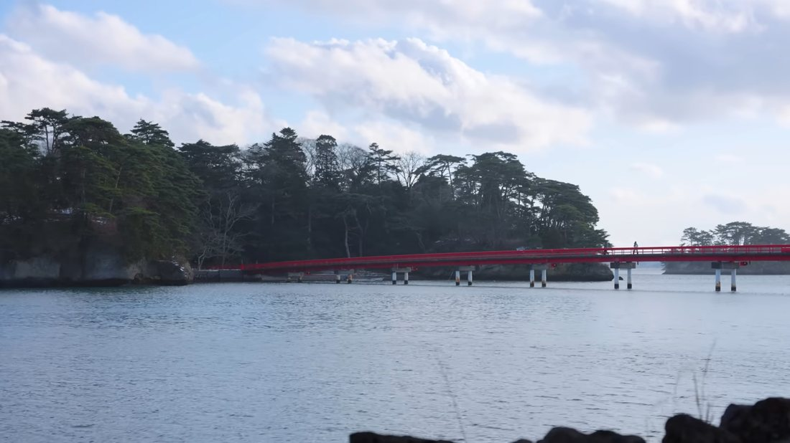

一条 14:15 的东京 5 天动线：从浅草走到涩谷，从皇居走到秋叶原，最后留给 teamLab 和丰洲。把字幕里出现的卡、票价、步行分钟数和预约提前量，按能直接照做的顺序排好。

适合谁：第一次来东京、有 5 个整天、愿意按天走完不同城区的人。视频把每天串成一条线，交通全靠环线和步行衔接。
不适合谁：只想深玩一个街区、不愿提前订 teamLab，或航班落地太晚赶不上末班车的人。作者明确说，东京是「按你想做什么来安排」的城市00:12:19。
先把住处压在山手线站点步行范围内。环线一圈 1 小时00:00:41，双向都跑，住在沿线就很少超过 30 分钟00:00:44 到目的地。
优先选新宿或涩谷00:01:47，夜里玩完方便回住处；列车在午夜后不久停运00:01:49，每天出门前先确认末班车00:02:16。想早起看浅草寺日出，也可以住浅草／押上一带00:02:01。

只玩东京，不用买 JR Pass00:01:02：它并非每条线都有效00:01:07。改买 IC 卡并充值约 5000 日元（30 美元）00:01:11，视频说它在全日本交通网、便利店和部分自动售货机都能用00:01:16。
没有卡也能乘：售票机可切英文，照屏幕买票即可00:01:34。成田机场离市区约 1 小时00:02:22，别把航班排得太晚——过关、领 Wi-Fi、买卡、入住都要在末班车前完成00:02:26。
| 要决定的事 | 视频里的说法 | 照着做 |
|---|---|---|
| 买哪种 IC 卡 | 录制时东京本地 Suica 已不再向游客发售00:01:25 | 用 iPhone 注册 Apple Pay 后刷手机过闸00:12:45；或在东京站东海道新干线办公室附近买其他地区 IC 卡00:13:22 |
| Welcome Suica 值不值 | 有效期只有 28 天00:12:54，旅行结束余额不退00:12:59 | 短期游客可接受；介意余额就选别的卡 |
| 从大阪入境 | 大阪买的 ICOCA 在东京也能用00:13:10 | 直接带着这张卡进东京，不必另买 |
| 住哪一区 | 新宿／涩谷是市中心，浅草适合日出看寺00:02:01 | 夜生活多选新宿涩谷；早起党选浅草，都要靠环线站 |
| 要不要登晴空塔 | 登顶 20 美元00:03:39；作者只在晴天推荐00:03:42 | 看天气再决定；寒冷季节有机会远眺富士山00:03:46 |
| 皇居划船 | 4 美元00:05:07，不能预约00:05:10，旺季 8:00 起先到先得00:05:12 | 同行一人先排队，其他人逛公园等叫号00:05:18 |

越早到浅草寺越好。作者说这座寺白天会挤满人00:02:49，从雷门起步，沿仲见世走到寺前00:02:51，再拐进周边老街吃一顿传统日餐00:03:02。

从寺区步行 10 分钟 到隅田川00:03:08。樱花季沿河走，可看晴空塔和朝日啤酒馆00:03:16；再往前就是晴空塔，登顶 20 美元00:03:39。

入夜去涩谷吃晚饭，顺手过一次十字路口00:03:48。作者把「忙的第一天」当成倒时差和定调子的办法00:04:25。
皇居东御苑 9:00 开门00:04:45。从东京站步行 7 分钟 到护城河00:04:54，穿过东御苑往北丸公园走00:04:58，春天这里是赏樱点00:05:01。

想划船就按上表的规则排队；路对面还有靖国神社00:05:23。接着坐 20 分钟 火车到秋叶原00:05:39，从绿色桥上坡或从御茶水站下车，能拍到三条铁路交汇的机位00:05:49。

晚饭转场新宿：走东出口，出站 2 分钟 到思出横丁00:06:22，在窄巷居酒屋吃烤鸡串00:06:34。入夜后再走歌舞伎町看霓虹00:06:52。

别跟主动搭话、要带你回酒吧的人走00:07:09。想喝酒可去黄金街：视频说是 6 条 窄巷、约 200 家 小店00:07:29，多数有小额座位费00:07:55，挑一两家深坐比到处打卡划算00:07:57。
从原宿站进明治神宫森林。视频说林中有超过 10 万棵 树00:08:13，穿林到主殿约 10 分钟00:08:20；运气好能看到神道婚礼队伍00:08:30。

代代木公园有 700 多棵 樱花树00:08:36，春天带份野餐再走00:08:44。之后逛竹下通 400 米00:08:57 和表参道 1 公里00:09:15，后者偏奢侈品牌00:09:24。
傍晚去东京塔看亮灯00:09:47；塔底有 VR 游戏中心，雨天也能安排00:09:53。
第 4 天留给外围。作者列的选项是日光、箱根、富士五湖和横滨；持东京广域通票可不再加钱坐新干线00:10:15。横滨离东京 1 小时00:10:34，想轻松一点就选它。

第 5 天先去 teamLab Planets00:11:06。部分区域水深 1.5 英尺00:11:21，穿能卷到这个高度以上的裤子；有镜面地板，不建议穿裙子00:11:28，忘了可在前台租短裤00:11:37。
务必提前订：热门时段需要提前 1–2 周00:11:44。出馆后步行约 10 分钟 到丰洲鱼市00:12:01，这是筑地市场关闭后的新市场00:12:03；剩下的时间留给清单里没去成的地方00:12:25。
| 坑 | 怎么避 |
|---|---|
| 只玩东京却买 JR Pass | 作者说用不上00:01:02，且不是每条线都有效00:01:07；改用 IC 卡 |
| 住得离环线太远、错过末班 | 住宿压在山手线站步行范围内00:02:13；午夜后不久就停运00:01:49 |
| 到东京才想买本地 Suica | 录制时已停售游客00:01:25；改用 Apple Pay、外地 IC 卡或 Welcome Suica |
| 以为 Welcome Suica 余额能退 | 只有 28 天 有效期，余额旅行结束不退00:12:54 |
| 皇居划船临时才去 | 不能预约，旺季 8:00 起先到先得00:05:12 |
| 穿裙子或长裤进 teamLab 涉水区 | 水深 1.5 英尺00:11:21且有镜面地板00:11:28，现场可租短裤00:11:37 |
| 歌舞伎町跟着拉客的人进店 | 作者说可能被带去喝高价酒00:07:17；不跟、直接走开 |
| 说法 | 视频怎么说 | 本文口径 |
|---|---|---|
| 晴空塔高度 | 字幕称「280 ft、世界最高塔」00:03:37 | 视频未给出处；只采信登顶价 20 美元00:03:39，高度不下结论 |
| 涩谷人流 | 字幕「估计每 2 分钟 3000 人」过街00:03:59 | 原话是估算，不当硬指标 |
| 东京塔与埃菲尔铁塔 | 字幕称东京塔高 3 米00:09:42 | 视频未给出处，不下结论；只保留「夜里亮灯值得看」00:09:47 |
| 浅草寺排名 | 字幕称「东京最古老、最热门」00:02:40 | 属主观／排名表述，只当作「早去避开人潮」的理由 |